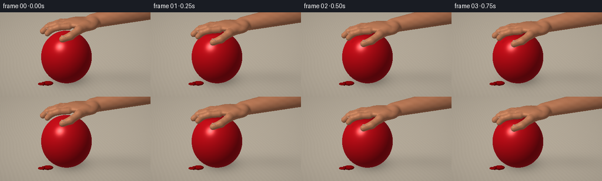
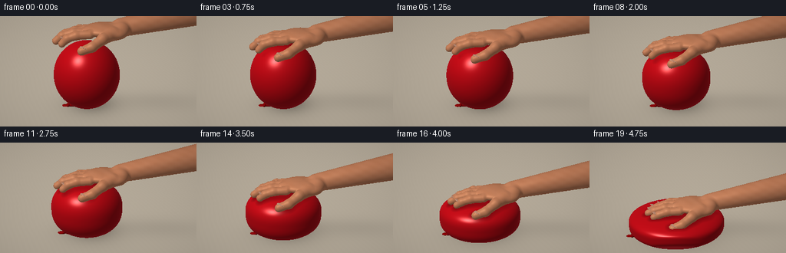
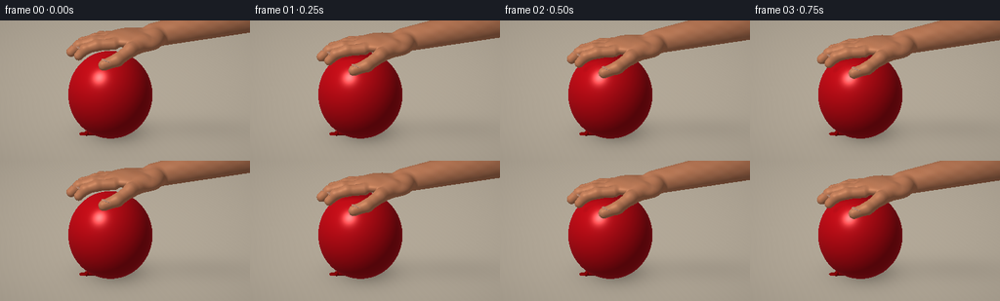

CODING AGENTS AS PIXEL WORLD MODELS
traex/GPT-6.1-Sol · phygen_013
点击播放 · 原生 RGB 像素
逐轮保存的候选
回放视频、检查图与代码变化。
每份候选均可单独播放。实际图片检查记录在下方工具轨迹中。
候选 01播放与检查图
点击播放 · 原生 RGB 像素

展开代码变化
--- 上一保存版本
+++ 本次保存版本
@@ -0,0 +1,217 @@
+import numpy as np
+from PIL import Image
+from pathlib import Path
+import artifact_io
+
+ROOT=Path(__file__).resolve().parent
+W,H=384,216
+Y,X=np.mgrid[0:H,0:W]
+rng=np.random.default_rng(42)
+# A fixed macro camera, above a light oak worktop.
+cam=np.array([0.,-8.6,5.1]); target=np.array([0.,0.,1.38])
+fwd=target-cam; fwd/=np.linalg.norm(fwd)
+right=np.cross(fwd,[0,0,1.]); right/=np.linalg.norm(right)
+up=np.cross(right,fwd)
+u=(X+.5-W/2)/W*5.85
+v=-(Y+.5-H/2)/W*5.85
+rays=fwd[None,None,:]*8.5+u[:,:,None]*right+v[:,:,None]*up
+rays/=np.linalg.norm(rays,axis=2,keepdims=True)
+D=rays.reshape(-1,3)
+light=np.array([-3.8,-4.0,7.5])
+
+
+def ell(p,c,r):
+ q=(p-c)/r
+ k0=np.linalg.norm(q,axis=-1)
+ k1=np.linalg.norm(q/r,axis=-1)
+ return k0*(k0-1)/np.maximum(k1,1e-8)
+
+def capsule(p,a,b,ra,rb):
+ d=b-a
+ t=np.clip(np.sum((p-a)*d,axis=-1)/np.dot(d,d),0,1)
+ return np.linalg.norm(p-a-t[:,None]*d,axis=-1)-(ra+(rb-ra)*t)
+
+def smin(a,b,k):
+ h=np.clip(.5+.5*(b-a)/k,0,1)
+ return b*(1-h)+a*h-k*h*(1-h)
+
+
+def hand_geometry(h,f):
+ E=[]; C=[]; nails=[]
+ def e(c,r):E.append((np.array(c),np.array(r)))
+ def c(a,b,ra,rb=None):C.append((np.array(a),np.array(b),ra,ra if rb is None else rb))
+ e([.18,.04,h+.205],[.66,.57,.205])
+ e([.51,-.23,h+.17],[.38,.33,.20])
+ e([.67,.10,h+.22],[.35,.39,.22])
+ c([.70,.13,h+.245],[3.9,.30,h+.88],.29,.47)
+ e([.72,-.09,h+.26],[.24,.24,.21])
+ ys=[-.37,-.065,.225,.465]
+ lengths=[.84,1.06,.99,.77]
+ radii=[.128,.137,.127,.110]
+ for j,(y,l,r) in enumerate(zip(ys,lengths,radii)):
+ a=np.array([-.25,y,h+.16])
+ b=np.array([-.25-l*.48,y-.015,h+.135])
+ cc=np.array([-.25-l*.81,y-.033,h+.043])
+ tip=np.array([-.25-l,y-.045,h-.035-.08*(1-f)])
+ c(a,b,r*1.03,r)
+ c(b,cc,r,r*.93)
+ c(cc,tip,r*.93,r*.84)
+ # Nail beds, tilted with the distal phalanges.
+ nails.append((tip*.63+cc*.37+np.array([.015,0,r*.85]),np.array([.13,r*.65,.018]),-.45))
+ c([.44,-.37,h+.17],[.13,-.66,h+.10],.19,.155)
+ c([.13,-.66,h+.10],[-.17,-.86,h-.07],.155,.139)
+ c([-.17,-.86,h-.07],[-.47,-.92,h-.17],.139,.124)
+ nails.append((np.array([-.37,-.93,h-.065]),np.array([.16,.088,.02]),-.25))
+ return E,C,nails
+
+
+def render(i):
+ t=i/19
+ f=(max(0.,(t-.075)/.925))**1.95
+ bh=2.35-1.48*f
+ # Approximately conserved air volume, with increasingly broad shoulders.
+ expo=2+1.6*f
+ rx=1.10*(2.35/bh)**.44*(1-.045*f)
+ ry=1.01*(2.35/bh)**.43*(1-.04*f)
+ center=np.array([-.38,.13,bh/2+.018])
+ hand_h=bh+.04+max(0.,1-t/.075)*.18
+ E,C,nails=hand_geometry(hand_h,f)
+
+ def hand_sdf(p):
+ res=ell(p,*E[0])
+ for c,r in E[1:]: res=smin(res,ell(p,c,r),.105)
+ for a,b,r1,r2 in C:res=smin(res,capsule(p,a,b,r1,r2),.06)
+ return res
+
+ def balloon_sdf(p):
+ q=p-center
+ radial=(q[:,0]/rx)**2+(q[:,1]/ry)**2
+ zz=np.abs(q[:,2]/(bh/2))
+ fun=radial+zz**expo-1
+ gx=2*q[:,0]/rx**2; gy=2*q[:,1]/ry**2
+ gz=expo*np.maximum(zz,1e-5)**(expo-1)/(bh/2)
+ grad=np.sqrt(gx*gx+gy*gy+gz*gz)
+ return fun/np.maximum(grad,.8)
+
+ # Direct ray/surface intersections with sphere tracing. No render engine is used.
+ plane_t=-cam[2]/D[:,2]
+ plane_p=cam+D*plane_t[:,None]
+ bg=np.zeros((len(D),3))
+ ground=plane_t>0
+ wood=plane_p[:,0]*.74+plane_p[:,1]*.28
+ grain=(np.sin(wood*47+2.2*np.sin(plane_p[:,1]*1.6))*.7+
+ np.sin(wood*122+np.sin(plane_p[:,1]*2.1))*0.35)
+ base=np.array([.66,.615,.545])
+ bg[:]=base+grain[:,None]*.008
+ # Broad diffuse studio shadow, tightened as the balloon becomes flatter.
+ shx=plane_p[:,0]-center[0]-.16; shy=plane_p[:,1]-center[1]-.17
+ shadow=np.exp(-((shx/(rx*1.07))**2+(shy/(ry*1.04))**2)*1.65)
+ contact=np.exp(-((shx/(rx*.83))**2+(shy/(ry*.85))**2)*2.4)
+ armshadow=np.exp(-((plane_p[:,0]-2.1)/1.8)**2-((plane_p[:,1]-.45)/.7)**2)*.08
+ bg*= (1-.20*shadow-.17*contact-armshadow)[:,None]
+ bg[~ground]=[.67,.66,.635]
+
+ # Ray box culling to avoid unnecessary implicit evaluation on the background.
+ lo=np.array([-rx-.55,-1.2,.015]); hi=np.array([4.4,1.5,hand_h+1.4])
+ aa=(lo-cam)/D; bb=(hi-cam)/D
+ enter=np.maximum(np.min(np.stack([aa,bb]),axis=0).max(axis=1),0)
+ leave=np.minimum(np.max(np.stack([aa,bb]),axis=0).min(axis=1),plane_t)
+ active=np.flatnonzero(leave>enter)
+ dist=enter.copy(); hit=np.zeros(len(D),bool); kind=np.zeros(len(D),np.int8)
+ for step in range(115):
+ if len(active)==0:break
+ p=cam+D[active]*dist[active,None]
+ ball=balloon_sdf(p); skin=hand_sdf(p)
+ dd=np.minimum(ball,skin)
+ ok=dd<.0015
+ ids=active[ok]; hit[ids]=True; kind[ids]=(skin[ok]<ball[ok])+1
+ remain=active[~ok]
+ dist[remain]+=np.maximum(dd[~ok]*.73,.001)
+ active=remain[dist[remain]<leave[remain]]
+ ids=np.flatnonzero(hit)
+ p=cam+D[ids]*dist[ids,None]
+ k=kind[ids]
+ def sdf(p):
+ return np.where(k==1,balloon_sdf(p),hand_sdf(p))
+ eps=.002
+ norm=np.column_stack([(sdf(p+np.eye(3)[j]*eps)-sdf(p-np.eye(3)[j]*eps))/(2*eps) for j in range(3)])
+ norm/=np.maximum(np.linalg.norm(norm,axis=1,keepdims=True),1e-8)
+ L=light-p; L/=np.linalg.norm(L,axis=1,keepdims=True)
+ V=-D[ids]
+ nd=np.maximum(0,np.sum(norm*L,axis=1))
+ hh=L+V; hh/=np.linalg.norm(hh,axis=1,keepdims=True)
+ spec=np.maximum(0,np.sum(norm*hh,axis=1))
+ fres=(1-np.maximum(0,np.sum(norm*V,axis=1)))**3
+ # Local contact occlusion at the palm/latex interface.
+ hb=hand_sdf(p+norm*.05)
+ ao=np.ones(len(p))
+ isball=k==1
+ ao[isball]=.68+.32*np.clip(hb[isball]/.15,0,1)
+ col=np.empty_like(p)
+ red=np.array([.72,.028,.057])
+ skincol=np.array([.71,.43,.29])
+ col[isball]=red*(.37+.65*nd[isball,None])*ao[isball,None]
+ col[isball]+=spec[isball,None]**75*np.array([.58,.46,.43])+spec[isball,None]**13*np.array([.06,.025,.027])
+ col[isball]+=fres[isball,None]*np.array([.13,.033,.041])
+ sk=~isball
+ warm=.01*np.sin(p[sk,0]*14+p[sk,1]*9)*np.sin(p[sk,2]*25)
+ col[sk]=(skincol+warm[:,None])*(.49+.57*nd[sk,None])
+ col[sk]+=spec[sk,None]**31*np.array([.11,.085,.065])
+ # Subtle sub-surface warmth and pores, scaled for a close-up.
+ col[sk]+=np.maximum(0,-np.sum(norm[sk]*L[sk],axis=1))[:,None]*np.array([.055,.016,.008])
+ pore=(np.sin(p[sk,0]*214+p[sk,2]*147)*np.sin(p[sk,1]*191-p[sk,2]*82))*.003
+ col[sk]+=pore[:,None]
+ bg[ids]=col
+
+ # Analytic ellipsoid nail plates on the dorsum of the fingertips.
+ for nc,nr,angle in nails:
+ ca,sa=np.cos(angle),np.sin(angle)
+ rot=np.array([[ca,0,-sa],[0,1,0],[sa,0,ca]])
+ o=(cam-nc)@rot; rd=D@rot
+ oq=o/nr; dq=rd/nr
+ qa=np.sum(dq*dq,axis=1); qb=2*np.sum(dq*oq,axis=1); qc=np.sum(oq*oq)-1
+ disc=qb*qb-4*qa*qc
+ sel=np.flatnonzero(disc>0)
+ tt=(-qb[sel]-np.sqrt(disc[sel]))/(2*qa[sel])
+ ok=(tt>0)&(tt<dist[sel]+.004)&hit[sel]
+ sel=sel[ok]; tt=tt[ok]
+ if len(sel):
+ pp=cam+D[sel]*tt[:,None]
+ nn=((pp-nc)@rot/nr**2)@rot.T
+ nn/=np.linalg.norm(nn,axis=1,keepdims=True)
+ ll=light-pp; ll/=np.linalg.norm(ll,axis=1,keepdims=True)
+ dif=np.maximum(0,np.sum(nn*ll,axis=1))
+ hs=ll-D[sel];hs/=np.linalg.norm(hs,axis=1,keepdims=True)
+ gloss=np.maximum(0,np.sum(nn*hs,axis=1))**55
+ nailcolor=np.array([.76,.535,.43])
+ bg[sel]=nailcolor*(.54+.46*dif[:,None])+gloss[:,None]*.14
+
+ # Tied latex neck, tucked at the front-left base of the balloon.
+ neckx=center[0]-rx*.74
+ knot=[(np.array([neckx,-.31,.135]),np.array([.23,.115,.095])),
+ (np.array([neckx-.20,-.335,.13]),np.array([.075,.105,.079])),
+ (np.array([neckx-.30,-.32,.112]),np.array([.135,.105,.037]))]
+ for nc,nr in knot:
+ oq=(cam-nc)/nr; dq=D/nr
+ qa=np.sum(dq*dq,axis=1);qb=2*np.sum(dq*oq,axis=1);qc=np.sum(oq*oq)-1
+ disc=qb*qb-4*qa*qc;sel=np.flatnonzero(disc>0)
+ tt=(-qb[sel]-np.sqrt(disc[sel]))/(2*qa[sel])
+ limit=np.where(hit[sel],dist[sel],plane_t[sel])
+ ok=(tt>0)&(tt<limit);sel=sel[ok];tt=tt[ok]
+ pp=cam+D[sel]*tt[:,None];nn=(pp-nc)/nr**2
+ nn/=np.linalg.norm(nn,axis=1,keepdims=True)
+ ll=light-pp;ll/=np.linalg.norm(ll,axis=1,keepdims=True)
+ dif=np.maximum(0,np.sum(nn*ll,axis=1))
+ bg[sel]=np.array([.53,.014,.028])*(.40+.6*dif[:,None])
+ # Fixed gentle vignette and photographic display curve.
+ img=bg.reshape(H,W,3)
+ vignette=1-.055*((X-W/2)**2/(W/2)**2+(Y-H/2)**2/(H/2)**2)
+ img=np.clip(img*vignette[:,:,None],0,1)
+ img=np.power(img,1/1.18)
+ return np.asarray(Image.fromarray((img*255).astype(np.uint8)).resize((256,144),Image.Resampling.LANCZOS))
+
+if __name__=='__main__':
+ frames=[]
+ for i in range(20):
+ frames.append(render(i));print('Rendered',i,flush=True)
+ artifact_io.save(np.stack(frames),ROOT)
候选 02播放与检查图
点击播放 · 原生 RGB 像素


展开代码变化
--- 上一保存版本
+++ 本次保存版本
@@ -102,7 +102,7 @@
grain=(np.sin(wood*47+2.2*np.sin(plane_p[:,1]*1.6))*.7+
np.sin(wood*122+np.sin(plane_p[:,1]*2.1))*0.35)
base=np.array([.66,.615,.545])
- bg[:]=base+grain[:,None]*.008
+ bg[:]=base+grain[:,None]*.003
# Broad diffuse studio shadow, tightened as the balloon becomes flatter.
shx=plane_p[:,0]-center[0]-.16; shy=plane_p[:,1]-center[1]-.17
shadow=np.exp(-((shx/(rx*1.07))**2+(shy/(ry*1.04))**2)*1.65)
@@ -187,10 +187,12 @@
bg[sel]=nailcolor*(.54+.46*dif[:,None])+gloss[:,None]*.14
# Tied latex neck, tucked at the front-left base of the balloon.
- neckx=center[0]-rx*.74
- knot=[(np.array([neckx,-.31,.135]),np.array([.23,.115,.095])),
- (np.array([neckx-.20,-.335,.13]),np.array([.075,.105,.079])),
- (np.array([neckx-.30,-.32,.112]),np.array([.135,.105,.037]))]
+ rho=np.sqrt(max(0.,1-abs((.14-center[2])/(bh/2))**expo))
+ neckx=center[0]-rx*rho*.94
+ necky=center[1]-ry*rho*.34
+ knot=[(np.array([neckx-.05,necky,.14]),np.array([.19,.081,.073])),
+ (np.array([neckx-.20,necky-.012,.13]),np.array([.058,.087,.063])),
+ (np.array([neckx-.29,necky-.014,.115]),np.array([.112,.083,.029]))]
for nc,nr in knot:
oq=(cam-nc)/nr; dq=D/nr
qa=np.sum(dq*dq,axis=1);qb=2*np.sum(dq*oq,axis=1);qc=np.sum(oq*oq)-1
可观测工具轨迹
实际执行的命令与返回图片。
命令 1exit 0
/bin/bash -lc 'ls -la && cat prompt.txt && cat GENERATION_RULES.md && cat task_spec.json'
命令 2exit 0
/bin/bash -lc 'cat artifact_io.py'
命令 3exit 0
/bin/bash -lc "python - <<'PY' import numpy, PIL print(numpy.__version__) PY"
命令 4exit 0
/bin/bash -lc "cat > generate.py <<'PY'
import numpy as np
from PIL import Image
from pathlib import Path
import artifact_io
ROOT=Path(__file__).resolve().parent
W,H=384,216
Y,X=np.mgrid[0:H,0:W]
rng=np.random.default_rng(42)
# A fixed macro camera, above a light oak worktop.
cam=np.array([0.,-8.6,5.1]); target=np.array([0.,0.,1.38])
fwd=target-cam; fwd/=np.linalg.norm(fwd)
right=np.cross(fwd,[0,0,1.]); right/=np.linalg.norm(right)
up=np.cross(right,fwd)
u=(X+.5-W/2)/W*5.85
v=-(Y+.5-H/2)/W*5.85
rays=fwd[None,None,:]*8.5+u[:,:,None]*right+v[:,:,None]*up
rays/=np.linalg.norm(rays,axis=2,keepdims=True)
D=rays.reshape(-1,3)
light=np.array([-3.8,-4.0,7.5])
def ell(p,c,r):
q=(p-c)/r
k0=np.linalg.norm(q,axis=-1)
k1=np.linalg.norm(q/r,axis=-1)
return k0*(k0-1)/np.maximum(k1,1e-8)
def capsule(p,a,b,ra,rb):
d=b-a
t=np.clip(np.sum((p-a)*d,axis=-1)/np.dot(d,d),0,1)
return np.linalg.norm(p-a-t[:,None]*d,axis=-1)-(ra+(rb-ra)*t)
def smin(a,b,k):
h=np.clip(.5+.5*(b-a)/k,0,1)
return b*(1-h)+a*h-k*h*(1-h)
def hand_geometry(h,f):
E=[]; C=[]; nails=[]
def e(c,r):E.append((np.array(c),np.array(r)))
def c(a,b,ra,rb=None):C.append((np.array(a),np.array(b),ra,ra if rb is None else rb))
e([.18,.04,h+.205],[.66,.57,.205])
e([.51,-.23,h+.17],[.38,.33,.20])
e([.67,.10,h+.22],[.35,.39,.22])
c([.70,.13,h+.245],[3.9,.30,h+.88],.29,.47)
e([.72,-.09,h+.26],[.24,.24,.21])
ys=[-.37,-.065,.225,.465]
lengths=[.84,1.06,.99,.77]
radii=[.128,.137,.127,.110]
for j,(y,l,r) in enumerate(zip(ys,lengths,radii)):
a=np.array([-.25,y,h+.16])
b=np.array([-.25-l*.48,y-.015,h+.135])
cc=np.array([-.25-l*.81,y-.033,h+.043])
tip=np.array([-.25-l,y-.045,h-.035-.08*(1-f)])
c(a,b,r*1.03,r)
c(b,cc,r,r*.93)
c(cc,tip,r*.93,r*.84)
# Nail beds, tilted with the distal phalanges.
nails.append((tip*.63+cc*.37+np.array([.015,0,r*.85]),np.array([.13,r*.65,.018]),-.45))
c([.44,-.37,h+.17],[.13,-.66,h+.10],.19,.155)
c([.13,-.66,h+.10],[-.17,-.86,h-.07],.155,.139)
c([-.17,-.86,h-.07],[-.47,-.92,h-.17],.139,.124)
nails.append((np.array([-.37,-.93,h-.065]),np.array([.16,.088,.02]),-.25))
return E,C,nails
def render(i):
t=i/19
f=(max(0.,(t-.075)/.925))**1.95
bh=2.35-1.48*f
# Approximately conserved air volume, with increasingly broad shoulders.
expo=2+1.6*f
rx=1.10*(2.35/bh)**.44*(1-.045*f)
ry=1.01*(2.35/bh)**.43*(1-.04*f)
center=np.array([-.38,.13,bh/2+.018])
hand_h=bh+.04+max(0.,1-t/.075)*.18
E,C,nails=hand_geometry(hand_h,f)
def hand_sdf(p):
res=ell(p,*E[0])
for c,r in E[1:]: res=smin(res,ell(p,c,r),.105)
for a,b,r1,r2 in C:res=smin(res,capsule(p,a,b,r1,r2),.06)
return res
def balloon_sdf(p):
q=p-center
radial=(q[:,0]/rx)**2+(q[:,1]/ry)**2
zz=np.abs(q[:,2]/(bh/2))
fun=radial+zz**expo-1
gx=2*q[:,0]/rx**2; gy=2*q[:,1]/ry**2
gz=expo*np.maximum(zz,1e-5)**(expo-1)/(bh/2)
grad=np.sqrt(gx*gx+gy*gy+gz*gz)
return fun/np.maximum(grad,.8)
# Direct ray/surface intersections with sphere tracing. No render engine is used.
plane_t=-cam[2]/D[:,2]
plane_p=cam+D*plane_t[:,None]
bg=np.zeros((len(D),3))
ground=plane_t>0
wood=plane_p[:,0]*.74+plane_p[:,1]*.28
grain=(np.sin(wood*47+2.2*np.sin(plane_p[:,1]*1.6))*.7+
np.sin(wood*122+np.sin(plane_p[:,1]*2.1))*0.35)
base=np.array([.66,.615,.545])
bg[:]=base+grain[:,None]*.008
# Broad diffuse studio shadow, tightened as the balloon becomes flatter.
shx=plane_p[:,0]-center[0]-.16; shy=plane_p[:,1]-center[1]-.17
shadow=np.exp(-((shx/(rx*1.07))**2+(shy/(ry*1.04))**2)*1.65)
contact=np.exp(-((shx/(rx*.83))**2+(shy/(ry*.85))**2)*2.4)
armshadow=np.exp(-((plane_p[:,0]-2.1)/1.8)**2-((plane_p[:,1]-.45)/.7)**2)*.08
bg*= (1-.20*shadow-.17*contact-armshadow)[:,None]
bg[~ground]=[.67,.66,.635]
# Ray box culling to avoid unnecessary implicit evaluation on the background.
lo=np.array([-rx-.55,-1.2,.015]); hi=np.array([4.4,1.5,hand_h+1.4])
aa=(lo-cam)/D; bb=(hi-cam)/D
enter=np.maximum(np.min(np.stack([aa,bb]),axis=0).max(axis=1),0)
leave=np.minimum(np.max(np.stack([aa,bb]),axis=0).min(axis=1),plane_t)
active=np.flatnonzero(leave>enter)
dist=enter.copy(); hit=np.zeros(len(D),bool); kind=np.zeros(len(D),np.int8)
for step in range(115):
if len(active)==0:break
p=cam+D[active]*dist[active,None]
ball=balloon_sdf(p); skin=hand_sdf(p)
dd=np.minimum(ball,skin)
ok=dd<.0015
ids=active[ok]; hit[ids]=True; kind[ids]=(skin[ok]<ball[ok])+1
remain=active[~ok]
dist[remain]+=np.maximum(dd[~ok]*.73,.001)
active=remain[dist[remain]<leave[remain]]
ids=np.flatnonzero(hit)
p=cam+D[ids]*dist[ids,None]
k=kind[ids]
def sdf(p):
return np.where(k==1,balloon_sdf(p),hand_sdf(p))
eps=.002
norm=np.column_stack([(sdf(p+np.eye(3)[j]*eps)-sdf(p-np.eye(3)[j]*eps))/(2*eps) for j in range(3)])
norm/=np.maximum(np.linalg.norm(norm,axis=1,keepdims=True),1e-8)
L=light-p; L/=np.linalg.norm(L,axis=1,keepdims=True)
V=-D[ids]
nd=np.maximum(0,np.sum(norm*L,axis=1))
hh=L+V; hh/=np.linalg.norm(hh,axis=1,keepdims=True)
spec=np.maximum(0,np.sum(norm*hh,axis=1))
fres=(1-np.maximum(0,np.sum(norm*V,axis=1)))**3
# Local contact occlusion at the palm/latex interface.
hb=hand_sdf(p+norm*.05)
ao=np.ones(len(p))
isball=k==1
ao[isball]=.68+.32*np.clip(hb[isball]/.15,0,1)
col=np.empty_like(p)
red=np.array([.72,.028,.057])
skincol=np.array([.71,.43,.29])
col[isball]=red*(.37+.65*nd[isball,None])*ao[isball,None]
col[isball]+=spec[isball,None]**75*np.array([.58,.46,.43])+spec[isball,None]**13*np.array([.06,.025,.027])
col[isball]+=fres[isball,None]*np.array([.13,.033,.041])
sk=~isball
warm=.01*np.sin(p[sk,0]*14+p[sk,1]*9)*np.sin(p[sk,2]*25)
col[sk]=(skincol+warm[:,None])*(.49+.57*nd[sk,None])
col[sk]+=spec[sk,None]**31*np.array([.11,.085,.065])
# Subtle sub-surface warmth and pores, scaled for a close-up.
col[sk]+=np.maximum(0,-np.sum(norm[sk]*L[sk],axis=1))[:,None]*np.array([.055,.016,.008])
pore=(np.sin(p[sk,0]*214+p[sk,2]*147)*np.sin(p[sk,1]*191-p[sk,2]*82))*.003
col[sk]+=pore[:,None]
bg[ids]=col
# Analytic ellipsoid nail plates on the dorsum of the fingertips.
for nc,nr,angle in nails:
ca,sa=np.cos(angle),np.sin(angle)
rot=np.array([[ca,0,-sa],[0,1,0],[sa,0,ca]])
o=(cam-nc)@rot; rd=D@rot
oq=o/nr; dq=rd/nr
qa=np.sum(dq*dq,axis=1); qb=2*np.sum(dq*oq,axis=1); qc=np.sum(oq*oq)-1
disc=qb*qb-4*qa*qc
sel=np.flatnonzero(disc>0)
tt=(-qb[sel]-np.sqrt(disc[sel]))/(2*qa[sel])
ok=(tt>0)&(tt<dist[sel]+.004)&hit[sel]
sel=sel[ok]; tt=tt[ok]
if len(sel):
pp=cam+D[sel]*tt[:,None]
nn=((pp-nc)@rot/nr**2)@rot.T
nn/=np.linalg.norm(nn,axis=1,keepdims=True)
ll=light-pp; ll/=np.linalg.norm(ll,axis=1,keepdims=True)
dif=np.maximum(0,np.sum(nn*ll,axis=1))
hs=ll-D[sel];hs/=np.linalg.norm(hs,axis=1,keepdims=True)
gloss=np.maximum(0,np.sum(nn*hs,axis=1))**55
nailcolor=np.array([.76,.535,.43])
bg[sel]=nailcolor*(.54+.46*dif[:,None])+gloss[:,None]*.14
# Tied latex neck, tucked at the front-left base of the balloon.
neckx=center[0]-rx*.74
knot=[(np.array([neckx,-.31,.135]),np.array([.23,.115,.095])),
(np.array([neckx-.20,-.335,.13]),np.array([.075,.105,.079])),
(np.array([neckx-.30,-.32,.112]),np.array([.135,.105,.037]))]
for nc,nr in knot:
oq=(cam-nc)/nr; dq=D/nr
qa=np.sum(dq*dq,axis=1);qb=2*np.sum(dq*oq,axis=1);qc=np.sum(oq*oq)-1
disc=qb*qb-4*qa*qc;sel=np.flatnonzero(disc>0)
tt=(-qb[sel]-np.sqrt(disc[sel]))/(2*qa[sel])
limit=np.where(hit[sel],dist[sel],plane_t[sel])
ok=(tt>0)&(tt<limit);sel=sel[ok];tt=tt[ok]
pp=cam+D[sel]*tt[:,None];nn=(pp-nc)/nr**2
nn/=np.linalg.norm(nn,axis=1,keepdims=True)
ll=light-pp;ll/=np.linalg.norm(ll,axis=1,keepdims=True)
dif=np.maximum(0,np.sum(nn*ll,axis=1))
bg[sel]=np.array([.53,.014,.028])*(.40+.6*dif[:,None])
# Fixed gentle vignette and photographic display curve.
img=bg.reshape(H,W,3)
vignette=1-.055*((X-W/2)**2/(W/2)**2+(Y-H/2)**2/(H/2)**2)
img=np.clip(img*vignette[:,:,None],0,1)
img=np.power(img,1/1.18)
return np.asarray(Image.fromarray((img*255).astype(np.uint8)).resize((256,144),Image.Resampling.LANCZOS))
if __name__=='__main__':
frames=[]
for i in range(20):
frames.append(render(i));print('Rendered',i,flush=True)
artifact_io.save(np.stack(frames),ROOT)
PY
OPENBLAS_NUM_THREADS=1 python generate.py"命令 5exit 0
/bin/bash -lc "python - <<'PY' p='generate.py' s=open(p).read().replace(\"bg[:]=base+grain[:,None]*.008\",\"bg[:]=base+grain[:,None]*.003\") s=s.replace(\"neckx=center[0]-rx*.74\\n knot=[(np.array([neckx,-.31,.135]),np.array([.23,.115,.095])),\\n (np.array([neckx-.20,-.335,.13]),np.array([.075,.105,.079])),\\n (np.array([neckx-.30,-.32,.112]),np.array([.135,.105,.037]))]\", \"rho=np.sqrt(max(0.,1-abs((.14-center[2])/(bh/2))**expo))\\n neckx=center[0]-rx*rho*.94\\n necky=center[1]-ry*rho*.34\\n knot=[(np.array([neckx-.05,necky,.14]),np.array([.19,.081,.073])),\\n (np.array([neckx-.20,necky-.012,.13]),np.array([.058,.087,.063])),\\n (np.array([neckx-.29,necky-.014,.115]),np.array([.112,.083,.029]))]\") open(p,'w').write(s) PY OPENBLAS_NUM_THREADS=1 python generate.py"
命令 6exit 0
/bin/bash -lc "ls -lh pixels.npz index.html inspection.png generate.py && python - <<'PY'
import numpy as np
p=np.load('pixels.npz')['pixels']; print(p.shape, p.dtype)
PY"视觉工具实际返回图片 1

保存候选 2 份；完成命令 6 次；可验证图片返回 1 张。原始 API 响应与完整日志保留在本地。